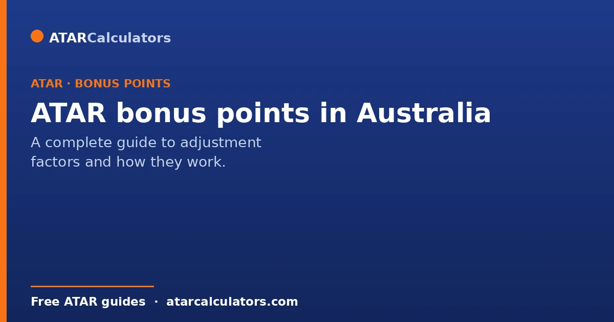
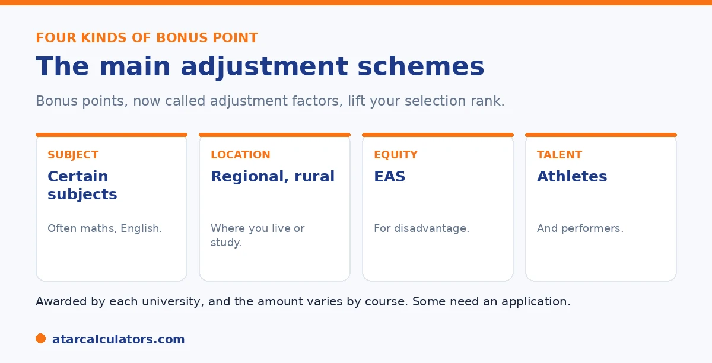

Here is the short version. ATAR bonus points, now called adjustment factors, are extra points some universities add to your ATAR to form your selection rank. The main types are subject adjustments, location adjustments for regional students, the Educational Access Scheme for disadvantage, and schemes for elite athletes and performers. Some are automatic, some need an application. They are awarded by each university and vary by course, and your selection rank is capped at 99.95.
Bonus points are one of the most misunderstood parts of university entry. They will not turn an average result into a top one, but they can bridge a real gap.
Below is how they work, the main types, and how to claim them. To estimate yours, use our bonus points calculator.
Key takeaways
- Bonus points are now called adjustment factors.
- They are added to your ATAR to form your selection rank.
- Main types: subject, location, equity (EAS), and talent.
- Some are automatic; others need an application.
- They are set by each university and vary by course.
- Your selection rank is capped at 99.95.
What bonus points are
Bonus points, now officially called adjustment factors, are extra points a university adds to your ATAR. The total becomes your selection rank, which is what the university uses to make offers.
Importantly, they do not change your ATAR. They only lift your selection rank for the courses where you qualify. And they are set by each university, so they differ from one to another.
The four main types
Most bonus points fall into four groups. Here they are at a glance.

The four are subject adjustments, location adjustments, the Educational Access Scheme, and schemes for elite athletes and performers. We will look at each.
Subject adjustments
Many universities reward strong results in certain subjects. These are often maths and English, or subjects linked to your course, such as a science for an engineering degree.
Subject adjustments are usually added automatically for local Year 12 students. The amount, and which subjects count, vary by university. See our guide on subject bonus points.
Location adjustments
If you live in, or attend school in, a designated regional area, many universities add location adjustments. These are usually automatic, based on your postcode or school.
The rules differ. Some universities use your home address, some your school, and some both. To check, see our guide on regional bonus points.
Want to estimate your bonus points?
Try the bonus points calculator →The Educational Access Scheme
The Educational Access Scheme, or EAS, is for students whose study was affected by hardship during Year 11 or 12. This covers things like money problems, illness or disability, a difficult home life, or disrupted schooling.
Unlike subject and location adjustments, EAS needs a separate application, with documents. It does not guarantee a place, but it can lift your selection rank. See our EAS guide.
Elite athletes and performers
Some universities offer adjustment schemes for elite athletes and performers, recognising the demands of training or rehearsing alongside Year 12. Not every university offers this.
These usually need a separate application, directly to the university or through your admissions centre. See our guide on elite athlete bonus points.
Caps and limits
Bonus points do not stack without limit. Each university caps the total it awards, and the cap varies, often somewhere around 10 to 15 points in total. Within a single scheme, points may not add up either.
On top of that, your selection rank cannot exceed 99.95. See our guide on the maximum bonus points for how stacking works.
Understanding the caps stops two opposite mistakes. The first is assuming you can pile every scheme on top of every other and add fifteen or twenty points to your ATAR. In reality each university sets an overall ceiling, commonly around ten points, and once you reach it, extra eligibility adds nothing. The second is assuming the caps make bonus points barely worth chasing. In the middle of the ATAR range, even a capped total of ten points can move you across several course cut-offs. That is often the difference between your preferred course and a backup. There are usually limits within schemes too. You might get a subject bonus for your best eligible subject but not cumulative points for every qualifying subject, for example. And the 99.95 ceiling means the benefit shrinks as your ATAR rises. So a student on 98 gains far less headroom than one on 85. The sensible approach is to identify every scheme you qualify for, and add them up to the university's cap. Then treat that capped total, not an imagined uncapped sum, as your realistic selection-rank boost for that university's courses.
How to claim bonus points
How you claim depends on the type. Subject and location adjustments are usually automatic, so you do nothing. The Educational Access Scheme and elite athlete schemes need a separate application, with documents.
You apply through your state admissions centre: UAC in NSW and the ACT, VTAC in Victoria, QTAC in Queensland, SATAC in South Australia and the Northern Territory, and TISC in Western Australia. Always check each university's own pages too.
Selection rank, not your ATAR
The single most important thing to understand is that bonus points do not change your ATAR. Your ATAR stays exactly the same. Instead, adjustment factors are added to your ATAR to form a selection rank for a specific course, and it is that selection rank the university uses to consider you.
So your ATAR of, say, 88 stays 88, but for a course offering adjustments you might be considered on a selection rank of 92. The bonus points apply to that course, not to your ATAR generally. See selection rank vs ATAR.
How many bonus points can you get?
Most universities cap total adjustment factors at around 10 points, though the exact cap varies by university and by course. You might qualify for several separate adjustments, for subjects, location and equity, but the total added to your rank is usually limited.
So while the individual schemes can add up, there is a ceiling. Aiming to understand the cap for the specific courses you want is more useful than assuming you can stack unlimited points. See the maximum bonus points guide.
Which courses offer bonus points
Not every course offers the same adjustments, and some highly competitive courses limit or exclude them. Many general degrees offer subject, regional and equity adjustments, while some selective programs, such as certain medicine or high-demand courses, apply fewer or none.
So the adjustments available depend on the specific course, not just the university. Always check the course entry information, since two courses at the same university can treat bonus points differently.
Automatic vs application-based adjustments
Some adjustments are applied automatically, while others require you to apply. Subject bonus points are usually automatic, added by the admissions centre based on the subjects you studied. Equity schemes such as the Educational Access Scheme, and elite athlete schemes, usually require an application with supporting documents.
So do not assume every adjustment will appear on its own. Check which schemes are automatic and which you must apply for, and lodge any applications by the deadline, or you may miss points you were entitled to.
The 99.95 ceiling
Bonus points can lift your selection rank above your ATAR, but your selection rank cannot exceed 99.95, the top of the scale. So if you already have a very high ATAR, adjustments have less room to help, because the rank is capped at the top.
This mainly matters for students near the top. For most students, there is plenty of headroom, and adjustments can make a real difference to a selection rank without hitting the ceiling.
The state admissions centres
Adjustment factors are applied through your state admissions centre: UAC in New South Wales and the ACT, VTAC in Victoria, QTAC in Queensland, SATAC in South Australia and the Northern Territory, and TISC in Western Australia. Each runs its own schemes and caps.
So the way bonus points work depends partly on your state’s centre, as well as the university and course. See bonus points by university for how the states compare.
A worked example
Suppose your ATAR is 85. For a particular course, you qualify for 3 subject adjustment points and 2 regional points, and the course caps adjustments at 5. Your selection rank for that course becomes 90, while your ATAR remains 85.
If the course’s selection-rank cutoff is 88, your ATAR of 85 alone would fall short, but your adjusted selection rank of 90 clears it. That is exactly how adjustments can turn a near miss into an offer for a specific course.
How to check your schemes
To know what you qualify for, check each university’s adjustment-factor information and your admissions centre’s schemes, for the specific courses you want. Look for subject adjustments, regional or location schemes, equity schemes such as EAS, and any elite athlete or performer schemes.
Because the details vary so much, this course-by-course check is the only reliable way to know your likely selection rank. A bonus points calculator can help you estimate the effect once you know which adjustments apply.
Planning for bonus points
You can plan for some adjustments in advance. Choosing subjects that attract bonus points for your target course, and checking whether you qualify for equity or location schemes, lets you factor likely adjustments into your course choices.
So bonus points are worth understanding early, not just at offer time. Knowing your likely selection rank for each course helps you set realistic preferences and targets while you still have time to act.
First-in-family and other schemes
Beyond subject, regional and equity adjustments, some universities run further schemes, such as first-in-family programs, or adjustments tied to particular partnerships or under-represented groups. These add to the range of adjustments that can lift a selection rank for eligible students.
So the full set of adjustments available is often broader than the main categories suggest. If you belong to a group a university specifically supports, check whether a scheme applies to you, since these can provide meaningful additional consideration.
When adjustments are applied
Adjustments are applied when your selection rank is calculated for each course, after results are released and as offers are prepared. Automatic adjustments, such as subject points, are added by the admissions centre, while scheme-based ones depend on your application being approved beforehand.
So the timing matters: application-based adjustments must be approved before selection ranks are worked out. Lodging equity or athlete applications by their deadlines ensures the points are ready to count when your rank is calculated.
Common misconceptions
A few misconceptions are worth clearing up. Bonus points do not raise your ATAR, only your selection rank for specific courses. They are not guaranteed for every course, and they do not stack without limit. And a very high ATAR leaves little room for them, because the rank is capped at 99.95.
So treat bonus points as course-specific, capped adjustments to your rank, not a general boost to your ATAR. Understanding this avoids both false hope and missed opportunities.
Are bonus points worth pursuing?
For most students, yes, especially the automatic ones you receive simply by studying certain subjects, and the equity or athlete schemes you may qualify for. A few points can move a selection rank across a cutoff, turning a near miss into an offer.
So it is worth understanding and, where needed, applying for the adjustments you are eligible for. The effort is small relative to the potential benefit of clearing a course cutoff you would otherwise just miss.
Common questions
How do ATAR bonus points work?
Bonus points, now called adjustment factors, are added to your ATAR to form your selection rank, which universities use for offers. The main types are subject, location, equity, and talent schemes. Some are automatic, some need an application.
How many bonus points can I get?
It depends on the university and the schemes you qualify for. Each university caps the total, often around 10 to 15 points, and points within a scheme may not all add up. Your selection rank is also capped at 99.95.
What are adjustment factors?
Adjustment factors are the official name for bonus points. They are extra points a university adds to your ATAR for things like your subjects, where you live, or your circumstances, forming your selection rank for eligible courses.
Do all universities give bonus points?
Most do, but the schemes vary widely. One university may offer a scheme another does not, and amounts differ from one university to another and from course to course. Always check each university directly.
Are bonus points automatic?
Some are. Subject and location adjustments are usually applied automatically for local Year 12 students. The Educational Access Scheme and elite athlete or performer schemes need a separate application, with supporting documents.
Do bonus points change my ATAR?
No. Bonus points do not change your ATAR. They only lift your selection rank for the courses where you qualify. Your ATAR stays fixed once results are released.
Estimate your bonus points
See how many adjustment factors you might get and your likely selection rank. Free, and no signup.
Open the bonus points calculator →Related guides
This guide is general information for students and parents, not formal admissions advice. Adjustment factors, schemes, caps and course cut-offs are set by each university and can change every year. They differ from one institution to another, and from course to course within the same institution. Always confirm the current details with the specific university and your state admissions centre (UAC, VTAC, QTAC, SATAC or TISC). A useful starting point is UAC's guide to selection rank adjustments. Reviewed by the ATARCalculators Editorial Team.